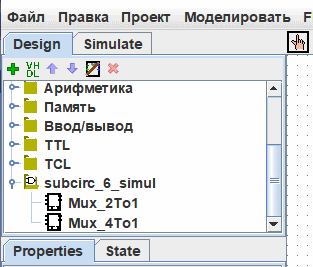

Библиотеки Logisim
Каждый проект Logisim - это автоматически библиотека, которая может быть загружена в другие проекты Logisim:затем в другом проекте выбрать файл с помощью меню | Импорт |→| Загрузить библиотеку |→| Librairie logisim | для его загрузки. Все схемы, объявленные в первом проекте, будут затем доступны как подсхемы для другого. Эта возможность позволяет вам повторно использовать общие между проектами компоненты и делиться любимыми компонентами со своими друзьями (или учащимися).
Ниже наш проект загружен как библиотека доступна на навигационной панели.

Примечание: Библиотека не должна содержать схему с тем же именем, что и схема, уже присутствующая в проекте.
Каждый проект имеет назначенную "главную схему", которой можно сделать текущую схему через пункт | Импорт |→| Сделать главной схемой | из меню Проект. Единственное значение этого - это то, что главная схема отображается, когда вы первый раз открываете проект. Название схемы по умолчанию в заново созданном файле ("main") вообще не имеет никакого значения, и вы можете смело удалить или переименовать эту схему.
Для загруженной библиотеке Logisim вам разрешено рассматривать схемы и управлять их состояниями, но Logisim не позволит вам менять чертёж схемы и другие данные, хранящиеся в файле.
Если вы хотите изменить схему в загруженной библиотеке Logisim, то вам придётся открыть её в Logisim отдельно. Как только вы её сохраните, другой проект сразу автоматически загрузит изменённую версию; но если этого не произошло, вы можете нажать правой кнопкой мыши на библиотеке в панели проводника и выбрать | Перезагрузить библиотеку.
Далее: Руководство пользователя.